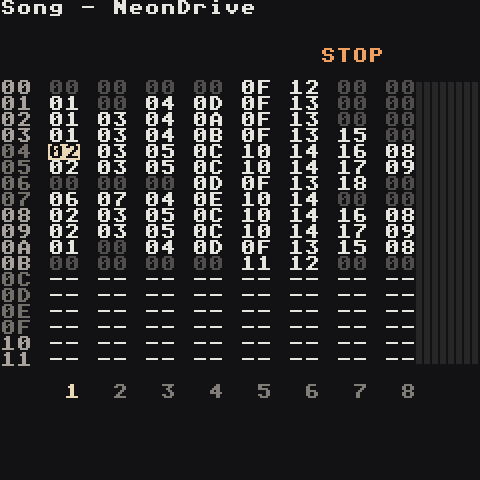
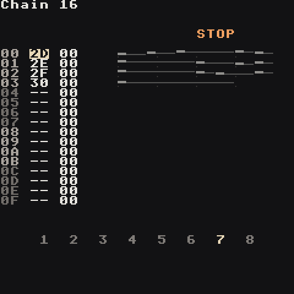
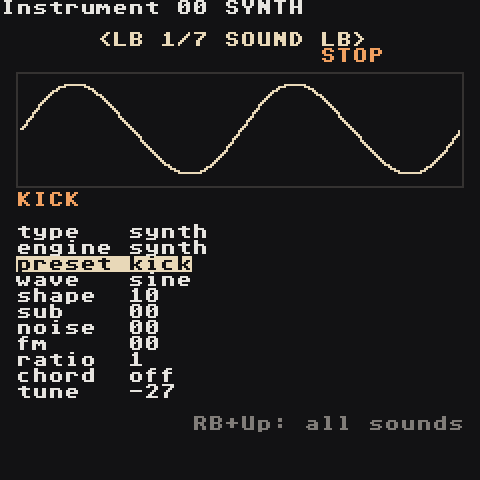

How Trackers Work
A tracker is a spreadsheet that plays music. Time runs down the screen one row at a time; instead of drawing notes, you type them into rows. Everything else is just organising those rows.
Four layers
SONG the whole arrangement: 8 tracks side by side, rows = time
└─ CHAIN one track's list of bars, played in order
└─ PHRASE one bar: 16 steps of notes and commands
└─ INSTRUMENT the sound each note uses
| Layer | Screen | Think of it as |
|---|---|---|
| Song |  |
The timeline. Each cell names a chain. Everything on the same row plays at the same time, one chain per track. |
| Chain |  |
A section of one track, e.g. "4 bars of drums". Each row is one phrase; the second column transposes it. |
| Phrase |  |
One bar. 16 rows = 16 steps = 16th notes. Columns: note, instrument, two commands. |
| Instrument |  |
The sound: a built-in synth or a WAV sample. |
Two helpers sit to the side:
- Table — a small list of commands that runs on its own, one row per tick: automation, arpeggios, stutters.
- Groove — how long each step lasts.
6 6is straight time;7 5swings.
Why it's built this way
Reuse. A drum bar you wrote once can appear in 40 places: every chain that lists that phrase plays it, and every song row that lists that chain plays it. Change the phrase once and every copy changes. Songs stay tiny and edits stay fast — that's how people write full albums on a Game Boy.
Numbers are hex
Values count 00 01 02 … 09 0A 0B 0C 0D 0E 0F 10 … FF.
| Hex | Means about |
|---|---|
00 |
nothing / off |
40 |
a quarter |
80 |
half |
C0 |
three quarters |
FF |
full |
You never need to convert. Nudge the value and listen.
Notes
C 3, D#3, A 2 — letter = note, number = octave. A 3 is 440 Hz. Drums sound right at C 3; bass instruments are pre-tuned lower so C 3 already sounds deep.
Time
- 1 step = a 16th note
- 4 steps = one beat
- 16 steps = one bar = one phrase
- The tempo (BPM) is on the Project screen.
Steps are made of ticks (6 per step with the default groove). Commands like RTRG and KILL count in ticks.
Tracks are monophonic
Each track plays one note at a time; a new note replaces the old one. That's why you use separate tracks for kick, snare and bass. For chords, the synth plays several notes from one with the chord knob or the CHRD command — see Synth.
Silence and looping
- A note keeps sounding until the next note on that track, or until a
KILLcommand. - In the Song, an empty
--cell makes that track jump back to the top of its block and loop. To make a track rest for a section, give it a chain of empty phrases. - Keep every chain on a Song row the same length so the tracks stay in step.
Next: Your First Song.